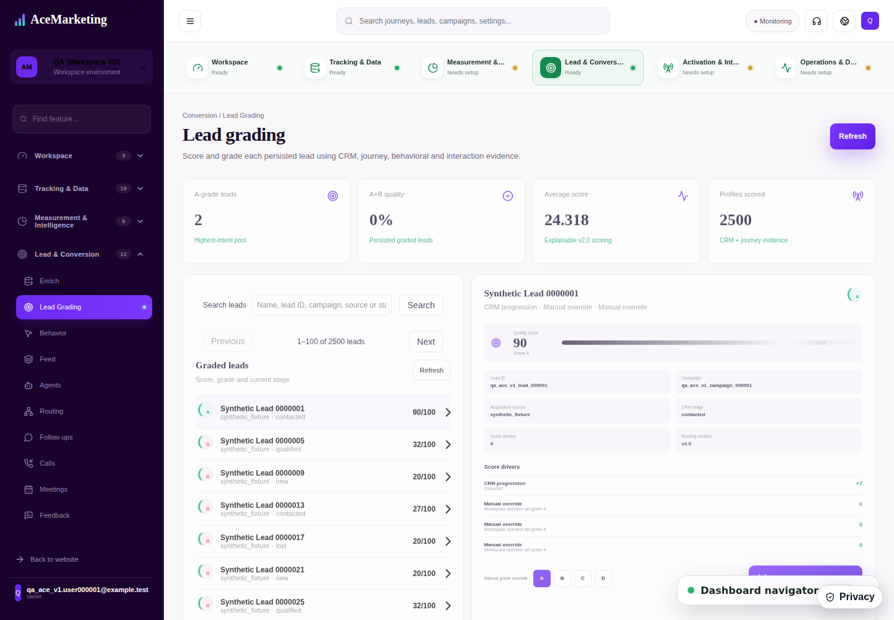

18 browser checks passed, zero failures or skips. Chromium, Firefox and WebKit each verified all 10,000 supplied leads across four workspaces.
Open the running local demo · Read the walkthrough · Detailed evidence and source hashes
| Verified | Result |
|---|---|
| Authenticated lead import and replay | 10,000 unique leads; 1,000 duplicate replays; every ID, workspace, name, stage, campaign and email hash reconciled. |
| Frontend visibility | 2,500 leads per workspace; all 25 pages compared by source ID and name in each browser. |
| Feature behavior | Search, record details, persisted grade override, activation of a late-page record, refresh and empty results passed. |
| Demo access | All four workspace launcher entries and login within a selected workspace passed. |
| Build checks | Typecheck and production build passed. |
Choose a workspace. Check Profiles scored, browse Next/Previous, search by lead ID or campaign, and select a record. Change its grade, refresh, then use the grade in activation to inspect the created routing operation.

This is evidence for one local feature. Full permissions, real CRM/provider integrations, realistic concurrent updates and load, recovery and human UAT still need qualification. Created routing does not prove live delivery. Most initial grades are D because the supplied import has CRM stages rather than rich behavioral evidence.
The locally generated demo launcher contains disposable dummy credentials and belongs only to this local build.